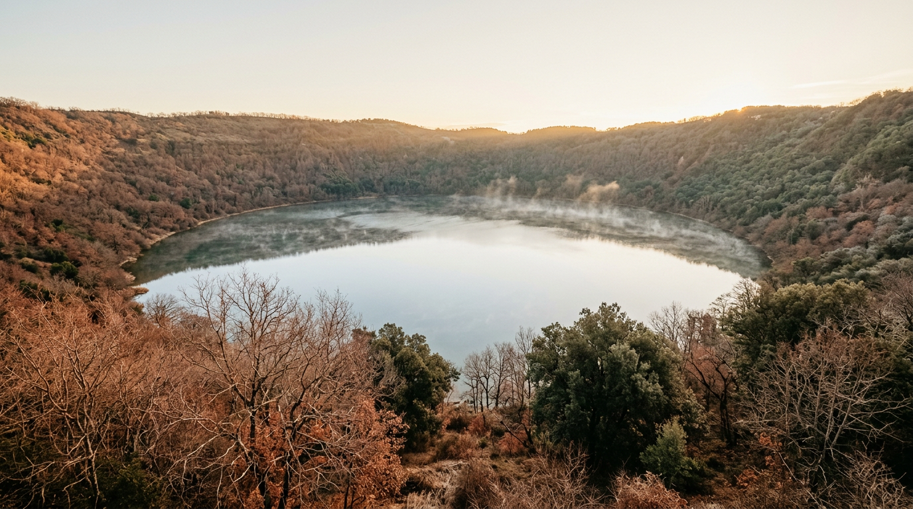

Gennaio sul lago — il silenzio del cratere.

Passate le feste, Castel Gandolfo torna a essere un paese di ottomila abitanti affacciato su un cratere. Gennaio è il mese più freddo dell'anno, ma anche quello in cui il borgo e il lago si lasciano guardare con più calma. Ecco cosa aspettarsi, numeri alla mano, e come passare una giornata d'inverno sul bordo del lago Albano.
Quanto fa freddo, davvero
Castel Gandolfo è in zona climatica D, con 1.966 gradi giorno; l'inverno è descritto come mite e piovoso, senza temperature eccessivamente basse, e la neve è rara, legata solo alle ondate di freddo generalizzato (Wikipedia). Non esiste una serie climatica lunga per il borgo: la stazione di riferimento più vicina, Roma Ciampino, a circa 130 metri di quota, registra a gennaio una media di circa 7 gradi, con minime medie intorno ai 3 e una media di 6-7 giorni di gelo nel trentennio 1971-2000 (Wikipedia). Il centro storico, a 426 metri (Wikipedia), è di regola qualche grado più fresco, come abbiamo spiegato parlando del microclima del cratere.
In inverno soffiano la tramontana, che arriva dalla pianura dell'Agro Romano, e il grecale (Wikipedia): sono i venti che puliscono l'aria e regalano le giornate più terse, quelle in cui dal belvedere si distinguono il mare e la linea di Roma. Gli stessi venti, però, rendono pungente il bordo del cratere: meglio una sciarpa in più che una in meno.
Il lago d'inverno
Il lago Albano si trova a 293 metri di quota, ha una superficie di circa 6 chilometri quadrati, una costa di una decina di chilometri e raggiunge i 168 metri di profondità (Wikipedia). D'inverno il lungolago, la strada che corre lungo la sponda settentrionale, è quasi deserto: si cammina in piano, con il bosco del cratere che sale alle spalle. Chi ama la natura può seguire il sentiero nel bosco della sponda est, dove si incontrano anche i resti di una villa romana; sull'acqua si vedono spesso cormorani, folaghe, gallinelle d'acqua e germani reali (Wikipedia). La navigazione a motore è vietata (Wikipedia), e il silenzio del titolo non è una figura retorica.
“A Castel Gandolfo nevica piuttosto raramente.”Wikipedia, voce Castel Gandolfo
Il Palazzo e i giardini
Il Palazzo Papale resta visitabile anche in inverno. Il calendario dei Musei Vaticani per gennaio 2027 indica ingressi dalle 9 alle 16 e chiusura alle 17.30, con l'uscita dalle sale che inizia mezz'ora prima; nei fine settimana di gennaio e febbraio sono accessibili, fino alle 16, anche il Giardino del Moro e il Giardino Segreto (Musei Vaticani). Dal Giardino del Moro si raggiungono i giardini di Villa Cybo, di cui abbiamo raccontato la storia. Controllate sempre il calendario aggiornato prima di partire: i giorni di chiusura cambiano di mese in mese.
Le date di gennaio
Il 6 gennaio chiude le feste con la Befana per i bambini, che lo scorso anno ha concluso il programma natalizio del Comune (Comune di Castel Gandolfo). Il 20 gennaio è la memoria di san Sebastiano, patrono della città, e gli uffici comunali restano chiusi (Comune di Castel Gandolfo); i festeggiamenti veri e propri, però, si tengono nel primo fine settimana di settembre (Comune di Castel Gandolfo). Lo Statuto comunale spiega perché: lo spostamento risale a una dispensa concessa da Pio VII ai castellani per lo scampato pericolo del colera (Statuto comunale).
Lo stesso Statuto prevede che la Marcia della Pace si svolga preferibilmente a gennaio (Statuto comunale), ma negli ultimi anni il corteo è legato all'anniversario del 10 febbraio 1944 e si tiene a febbraio, dalla piazza della Libertà attraverso il Borgo Laudato si' fino al Collegio di Propaganda Fide (Comune di Castel Gandolfo).
Consigli pratici
Le giornate sono corte: arrivate in mattinata, quando la luce radente accende la superficie del lago, e riservate il pomeriggio al borgo. Nelle giornate di tramontana una salita al Monte Cavo regala la vista più ampia sui Castelli; la sera, le fraschette di Ariccia sono il rifugio più caldo. Per il treno da Roma Termini e i parcheggi, trovate tutto nella pagina Come arrivare.